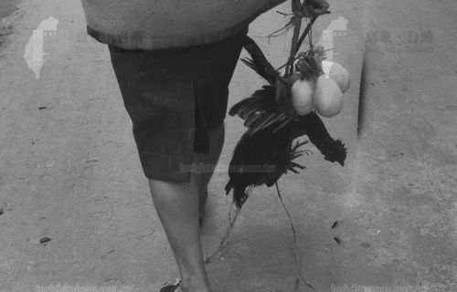
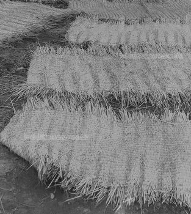

早期農業社會之中，很多生活器具都是農人自己利用周遭的植物所製作而成的。其中，鹹草的應用很廣泛，舉凡草繩、草蓆、草帽、草鞋等成品，都很受人歡迎！社子島的浮洲地區曾經有一段風光的鹹草產業史。根據當地耆老王吉桐先生所述，最早的時候在河川新生地前便有自然生成的鹹草，也因為它具有經濟價值，農家開始大量種植，當時主要是將鹹草編成草席(下圖最右側)，再送到到大稻埕、艋舺等城區販賣。
鄉下庭院(最右邊就是草蓆)
社子島的鹹草又稱茳茳鹹草，早期淡水河蘆洲和社子島的河岸沼澤主要生長著蘆葦和鹹草等類植物，大片的茳茳鹹草在夕陽下迎風搖曳。鹹草在社子島地區的生長情形也可以從史書上看出一點端倪，在陳培桂（1871年）的《淡水廳志：淡水廳圖》曾提及「咸(鹹)草埔」，其實就是指今天的社子島地區。茳茳鹹草，小穗排列密，三角形的莖，根莖粗壯且柔韌，長度又可達 1 公尺以上，早期臺灣地區的農人們便將它的稈曬乾，做為手工編織草繩、草蓆的材料，在塑膠業尚未發達的年代，鹹草草蓆是基隆河畔農家的收入來源之一。
茳茳鹹草
另一位耆老林慶章先生回憶道，整個頂浮洲大約有五、六十戶以種植鹹草作為主要的經濟來源，而且大多是自種自賣。鹹草所需的鹹水程度須適中，才能長出優質的鹹草，加工做成的草蓆睡起來才會舒服。鹹草最長可以長到七尺，當時的堤防內外都有種植。採收後的鹹草，必須先將其對切成兩半，再日曬三天，之後才能製成草蓆，兩人合力編織一張草蓆大約需要花費3~4天。鹹草一年可以採收兩次，四至五月為第一期採收，這時的鹹草還沒有開花；八至九月為第二期採收，這時的鹹草有開花，做成的草繩也會比較牢固一點。整個浮洲地區的產量約有三百多公斤，主要銷往大臺北地區，但如果遇到端午佳節包粽子，便會供不應求，得另外從南部採購。民國68年(1979年)塑膠工業開始興盛，鹹草才慢慢被其取代，隨著產業的沒落，農人不再種植，加上近年水質鹹化，鹹草逐漸在社子島上絕跡。
- 
提菜草繩 - 
草蓆

- Q1.以前和現在有什麼不同/相同？ A:以前的手工藝品多樣化，不只是在生活用品上，食物更是多元，以前常常有人推著推車，叫賣自己的手工冰淇淋，還有人叫賣著手工米棗，都是社子島人的珍貴資產，隨著時間越來越快，人們總會尋求新鮮感，融入更多的外來資訊，但時間過得很快，如果沒有人願意學習傳統文化，而是不斷的追求流行，它們將只能成為回憶。
- Q2.有什麼你覺得好的地方或不好的地方？ A:人們總是喜新厭舊，會去追求新鮮事物，這種心態可以讓社子島變得多元，但也不代表應該完全捨棄以前的「珍貴資產」，在進步的同時，也應保留文化，創造更好的新「文化資產」。 以前曾經有種植一種叫做「鹹草」的植物，是當時的主要經濟來源，採收後的鹹草可以做成草蓆，兩人合力製作需要花3~4天。隨著塑膠工業的興盛，鹹草慢慢被取代，加上水質逐漸鹹化，鹹草開始在社子島絕跡。